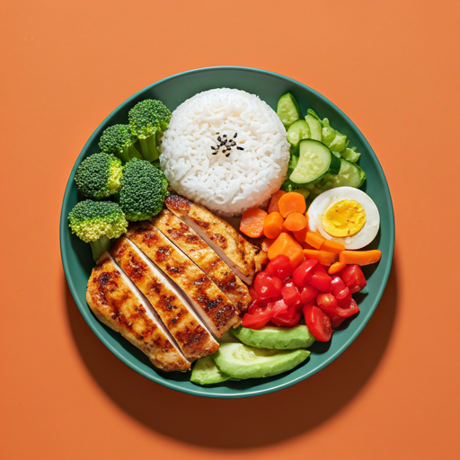

7 Hari Tanpa Gorengan
Reset pencernaanmu dan rasakan energi yang lebih stabil dengan menghindari minyak jenuh selama satu minggu penuh.
auto_awesome Mengapa Ikut?
Kulit Lebih Cerah
Mengurangi minyak berlebih membantu regenerasi kulit lebih sehat.
Energi Stabil
Hindari rasa kantuk berlebih setelah makan siang (food coma).
Defisit Kalori Alami
Mempercepat proses metabolisme tubuh secara signifikan.
Jantung Lebih Sehat
Menurunkan kadar kolesterol jahat (LDL) dalam tubuh Anda.
task_alt Tugas Harian
0/4 SelesaiMomen Komunitas
Inspirasi dari teman-teman yang sudah bergabung hari ini.